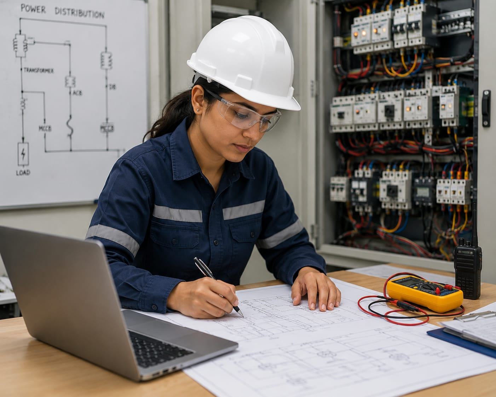

- Have you ever wondered how electricity reaches your home?
- Every day, we use lights, fans, televisions, refrigerators, and mobile chargers.
- These devices need a continuous supply of electricity to work.
- Someone has to make sure electricity is generated and delivered safely to homes, schools, hospitals, and industries.
- The person who helps manage these electrical systems is called an Electrical Engineer.
- 👉 In simple words: Electrical Engineers help generate, distribute, and manage electricity.
Electrical Engineer
🧑🎨 What Do They Do?

🎓 How to Become an Electrical Engineer
These diploma courses help students learn electrical systems, wiring, motors, power distribution, and electrical maintenance.
Diploma in Electrical Engineering
Duration: 3 Years
Eligibility: 10th Pass with Science and Mathematics
Exam: State Polytechnic Entrance Exams (e.g., JEECUP, POLYCET)
Note: Students can work as technicians or continue higher studies in Electrical Engineering.
B.Tech / B.E. in Electrical Engineering
Duration: 4 Years
Eligibility: 10+2 with Physics, Chemistry, and Mathematics (PCM)
Exam: JEE Main, JEE Advanced, MHT CET, WBJEE, VITEEE
📝 Exam Details
(Click on an exam name to see full details)
JEE Main JEE Advanced State Engineering Entrance Exams University Entrance ExamsB.Tech Lateral Entry in Electrical Engineering
Duration: 3 Years (Direct admission into 2nd year)
Eligibility: 3-Year Diploma in Electrical Engineering
Exam: State Lateral Entry Entrance Exams (e.g., JELET, TS ECET)
Note:
(Age limits, marks, and admission process may vary depending on the college or state. These courses are available in many colleges and universities across India. You can choose colleges based on your location, budget, and entrance exams.)
🏛️ Top Colleges for Electrical Engineering
(Tap on a college to view the details)
After 10th Pass (Diploma Programs)
Government Polytechnic, Mumbai PSG Polytechnic College, Coimbatore Government Polytechnic College, Kalamassery Thakur Polytechnic, MumbaiAfter 12th Pass (Bachelor's Degrees)
Indian Institute of Technology (IIT) Madras, Chennai Indian Institute of Technology (IIT) Delhi, New Delhi Indian Institute of Technology (IIT) Bombay, Mumbai National Institute of Technology (NIT) Trichy, Tiruchirappalli BITS Pilani, Pilani CampusAfter Diploma (Lateral Entry)
Anna University (MIT Campus), Chennai COEP Technological University, Pune Jadavpur University, Kolkata Delhi Technological University (DTU), New DelhiAfter Graduation (Master's Degrees & Deep R&D)
Indian Institute of Science (IISc), Bangalore Indian Institute of Technology (IIT) Bombay, Mumbai Indian Institute of Technology (IIT) Delhi, New Delhi Indian Institute of Technology (IIT) Madras, Chennai Indian Institute of Technology (IIT) Kharagpur, KharagpurSTEP 1
Imagine you are working as an Electrical Engineer.
STEP 2
People use lights, fans, TVs, computers, and mobile chargers every day.
STEP 3
Your job is to help make sure electricity reaches homes, schools, hospitals, and offices safely.
STEP 4
You check electrical equipment such as transformers, cables, and control panels.
STEP 5
You inspect the electrical system and look for any problems.
STEP 6
If there is a power failure, you help find the cause and restore the electricity.
STEP 7
You make sure all electrical equipment is working safely.
STEP 8
If you enjoy Physics, electricity, and solving problems, this career may be right for you.
Where do Electrical Engineers work? (Job Roles + Growth)
These are some roles you can explore in Electrical Engineering.
You usually start with beginner roles and grow with experience.
🟢 Beginner Roles
🔧
Junior Electrical Technician
(After Diploma)
Maintains electrical equipment and wiring systems.
📋
Graduate Engineer Trainee (GET)
(After B.Tech)
Assists engineers in testing electrical systems.
🔵 Mid-Level Roles
⚡
Electrical Design Engineer
(After B.Tech + Experience)
Designs electrical systems and power networks.
🔌
Power System Engineer
(After B.Tech Specialization + Experience)
Monitors power grids and electrical substations.
🟣 Advanced Roles
🏗️
Electrical Project Manager
(After M.Tech / Advanced Specialization)
Manages electrical projects and safety standards.
🏢
Chief Electrical Engineer
(After Executive Program + Experience)
Leads large electrical infrastructure projects.
⚡
Power Generation Companies
Generate electricity for cities and industries.
🔌
Power Distribution Companies
Deliver electricity to homes and businesses.
🏭
Manufacturing Industries
Maintain machines and electrical systems.
🚆
Railways & Metro Systems
Support trains and metro electrical networks.
🌞
Renewable Energy Companies
Work with solar and wind power systems.
🌍
Global Engineering Companies
Work on electrical projects around the world.
(Click Yes or No for each question)
1. Have you ever wondered how electricity reaches your home?
2. Do you know who designs the electrical systems inside a building?
3. Are you interested in learning how electrical systems work?
4. Are you interested in learning how electricity is distributed to homes and buildings?
5. Imagine a new apartment building is being constructed in your hometown. Your job is to design the electrical system and make sure electricity reaches every room safely. Does this sound exciting to you?